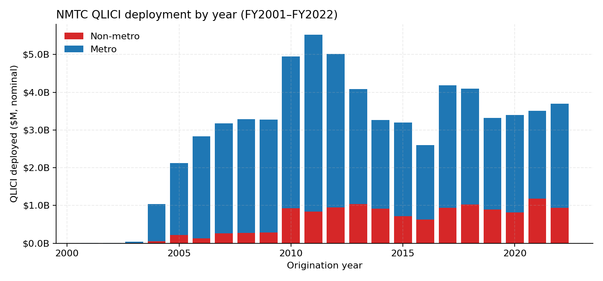
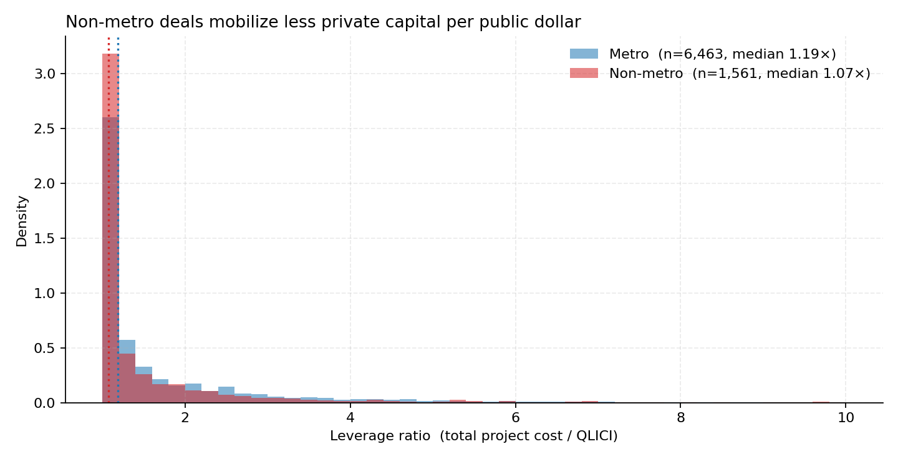
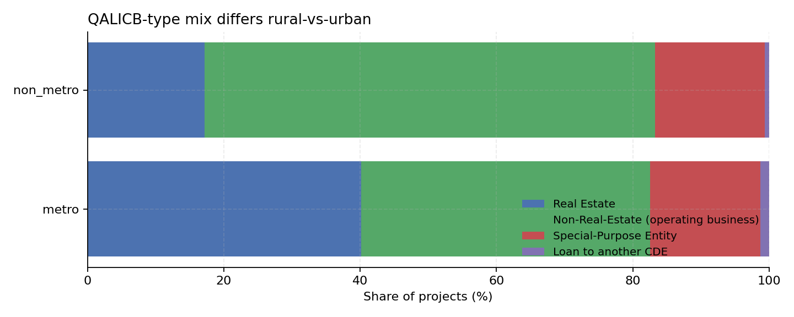
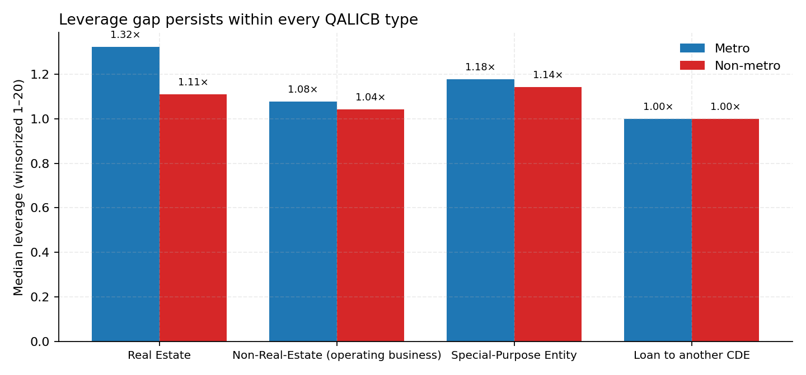

4 Descriptive findings
The empirical fact this paper exists to explain is visible before any regression. This chapter walks through six figures and one summary table that establish the rural mobilization gap as real, persistent across project types, and tied to enormous heterogeneity in CDE-level deployment behavior.
4.1 Headline numbers
| metric | value |
|---|---|
| Total QLICI deployed, FY2001–FY2022 | $66.6 billion |
| Total project cost (public + private combined) | $120.9 billion |
| Implied program-wide mobilization ratio | 0.82× |
| Number of QLICI transactions | 19,907 |
| Number of unique projects | 8,024 |
| Number of unique CDEs | ~600 |
| Number of unique census tracts | ~6,500 |
| Non-metro share of dollars | 19.6% |
| Non-metro share of transactions | 19.3% |
| Statutory non-metro target | 20.0% |
For every $1 of federal credit deployed, the program pulled in approximately $0.82 of additional non-federal capital. That’s the program-wide blended-finance number. It implies the federal credit is roughly 55% of total project cost on average — a program designed to catalyze private investment is being only barely matched dollar-for- dollar by private capital. NMTC is closer to a direct grant than a high-leverage instrument.
4.2 The metro-vs-non-metro split
| metro | non-metro | |
|---|---|---|
| Number of projects | 6,463 | 1,561 |
| Total QLICI deployed | $53.6 B | $13.0 B |
| Total project cost | $97.2 B | $23.8 B |
| Mean leverage | 1.99× | 1.73× |
| Median leverage | 1.19× | 1.07× |
| Mobilization ratio (aggregate) | 0.81× | 0.82× |
Two things to highlight:
- The aggregate mobilization ratios are nearly identical (0.81× metro vs 0.82× non-metro) — what CDFI tells the world. The aggregate hides the median story.
- The median leverage gap is real: 1.19× metro versus 1.07× non- metro. The right tail of leverage is long; the median is more informative than the mean. The typical rural deal mobilizes essentially zero additional private capital (1.07× is just barely above the 1× floor).
4.3 Annual deployment

The program ramped from almost nothing in 2001 to roughly $5 billion per year through the 2010s, then settled into a $3–4 billion annual steady state. The non-metro share (red base of each bar) is visibly present every year.
4.5 The leverage distribution

This is the empirical fact the rest of the paper is built around:
- Both distributions have a heavy mass at leverage = 1× — the floor meaning 100% NMTC-financed, zero private capital mobilized.
- The non-metro mass at the floor is substantially higher than metro. Rural deals very disproportionately do not mobilize any additional private capital.
- Both have long right tails, but metro has a noticeably fatter right shoulder (more deals at 1.5×, 2×, 3×). Metro deals more often stack additional private capital on top.
Median: 1.19× metro vs 1.07× non-metro, gap = 0.12. Mean: 1.99× vs 1.73×, gap = 0.26.
4.6 QALICB-type composition differs by metro status

A natural objection: maybe the rural leverage gap is just a project- type composition story. Real-estate deals leverage more than operating- business deals (you can stack mezzanine debt, second mortgages, etc.), and rural skews toward operating businesses. Maybe the metro-vs-non- metro gap is really an RE-vs-NRE gap.
This is the correct objection. We address it directly:
4.7 The gap holds within every QALICB type

| within QALICB type | metro median | non-metro median |
|---|---|---|
| Real estate (RE) | 1.32× | 1.11× |
| Non-real-estate (NRE) | 1.08× | 1.04× |
| Special-purpose (SPE) | 1.18× | 1.14× |
| Loan-to-CDE | 1.00× | 1.00× |
The gap is real and it is not composition.
4.8 CDE-level heterogeneity is enormous
The top-20 CDEs together do roughly 50% of all NMTC dollars. Their non-metro shares span from approximately 0% to 80%:
| CDE | total $M | non-metro share |
|---|---|---|
| Rural Development Partners LLC | 636 | 80% |
| Montana Community Development Corporation | 660 | 70% |
| Midwest Minnesota Community Development Corporation | 662 | 60% |
| Coastal Enterprises, Inc. | 679 | 40% |
| Advantage Capital Community Development Fund | 1,439 | 30% |
| Truist Community Development Enterprises | 654 | 20% |
| Stonehenge Community Development | 797 | 20% |
| Chase New Markets Corporation | 717 | 20% |
| USBCDE LLC | 935 | 10% |
| Local Initiatives Support Corporation | 1,123 | 10% |
| ESIC New Markets Partners | 1,057 | 0% |
| Consortium America LLC | 759 | 0% |
| Capital Impact Partners | 660 | 0% |
| National Trust Community Investment Corporation | 657 | 0% |
Same federal credit. Same statute. Wildly different organizations, wildly different deployment patterns. This heterogeneity is the variation the empirical strategy of Chapter 5 exploits.